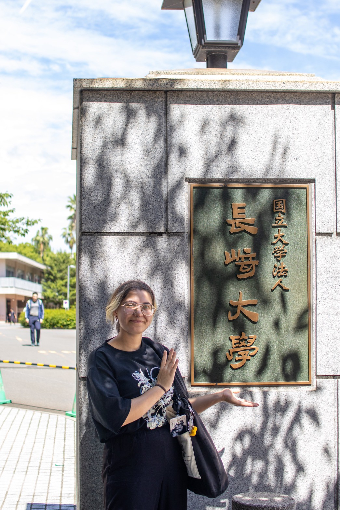

by Flame

Hi everyone, my name is Flame and before following this master’s programme of Book and Digital Media, I studied Japanese Language and Culture at Leiden University. During my studies I specialised in early modern Japanese Arts and Culture, with in particular the commercial printing industry in Edo (now Tokyo). I also followed the minor Boek, Boekhandel en Uitgeverij at Leiden University, as well as a minor in Conservation and Restoration of Cultural Heritage at the University of Amsterdam.
During my bachelor's study I first came into contact with the history of Japanese printing history and pretty much fell in love with it right away. During the following years, I therefore took as many classes on this topic as I could to broaden my knowledge on the subject. It is because of this that I also came to know much about the history of books in Japan (about their materials, their publishing, and their role in society). I was eager to learn more about these as well, so I enrolled for the above-mentioned minors. The first one taught me much about the (modern) publishing industry in the west rather than in Japan, the second about the degradation / conservation of paper carriers. However, there is still so much left to learn and this Master’s programme seems like the perfect opportunity to do so. Moreover, I believe it will provide me with many hard and soft skills valuable for a career in an archive, library, or museum, hence why I have enrolled in Book and Digital Media Studies.
Going on, in my free time I like to paint, read, study kuzushiji (Japanese cursive writing), and meet up with friends. As for my favourite books, these are listed below. As embarrassing as it might be, I’m quite fond of swoonworthy fictional historic romances with a good story line and an extra dose of feels…. But anyways, that’s a little bit about me. Thank you for reading!
Prior Knowledge |
Close to zero. During high school we once had to do a simple digital mark-up exercise as well and I couldn’t even get the background colour right. Since then I have never done anything similar to this again, so yeah… |
Expectations |
I expect to learn three things from these practical lessons of the Book in the Digital Age: to be able to understand what I am looking at when seeing an HTML code / listing, to be able to use the HTML language myself to create a simple web page, and to be able to fix the simplest of problems that may act up when working with HTML. |